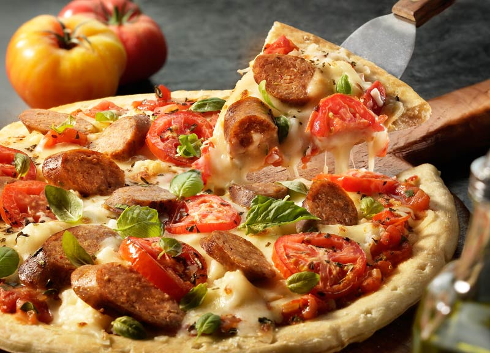

margherita
Home
Margherita pizza is known for its ingredients representing the colours of the Italian flag. These ingredients include red tomato sauce, white mozzarella and fresh green basil. When all of these delicious flavours are combined on a hand-kneaded pizza base, a universally-adored pizza is created. These early iterations of pizza were usually topped with a variety of things, such as tomatoes, cheese, olives, anchovies, and garlic. The famous French writer, Alexandre Dumas, even described the wide array and diversity of pizza toppings in 1843.

Here is the archetype of a thin-crust pizza pie, a pizza margherita adorned simply in the colors of the Italian flag: green from basil, white from mozzarella, red from tomato sauce. The ingredients offer in their proportions what appears to be a kind of austerity — not even 3 ounces of cheese! But the result is home-cooked pizza to beat the band, exactly the sort of recipe to start a career in home pizza-making, and to return to again and again.
Ingredients
300g strong bread flour
1 tsp instant yeast (from a sachet or a tub)
1 tsp salt
1 tbsp olive oil
100ml passata
handful fresh basil or 1 tsp dried
1 garlic clove, crushed
125g ball mozzarella, sliced
handful grated or shaved parmesan
handful of cherry tomatoes, halved
Nutrition Facts
Energy 204
Total Fat 3.9g
Cholestero 9mg
Sodium 145mg
Total Carbohydrate 34.23g
Vitamin C 3%
vitamin A 2%
Procedure
Make the base: Put the flour into a large bowl, then stir in the yeast and salt. Make a well, pour in 200ml warm water and the olive oil and bring together with a wooden spoon until you have a soft, fairly wet dough. Turn onto a lightly floured surface and knead for 5 mins until smooth.
Cover with a tea towel and set aside. You can leave the dough to rise if you like, but it's not essential for a thin crust.
Make the sauce: Mix the passata, basil and crushed garlic together, then season to taste. Leave to stand at room temperature while you get on with shaping the base.
Roll out the dough: if you've let the dough rise, give it a quick knead, then split into two balls. On a floured surface, roll out the dough into large rounds, about 25cm across, using a rolling pin. The dough needs to be very thin as it will rise in the oven. Lift the rounds onto two floured baking sheets.
Top and bake: heat the oven to 240C/220C fan/gas 8. Put another baking sheet or an upturned baking tray in the oven on the top shelf. Smooth sauce over bases with the back of a spoon.
Scatter with cheese and tomatoes, drizzle with olive oil and season. Put one pizza, still on its baking sheet, on top of the preheated sheet or tray. Bake for 8-10 mins until crisp. Serve with a little more olive oil, and basil leaves if using. Repeat step for remaining pizza.
Expert Guide
Back ←
Scroll to Top ↑